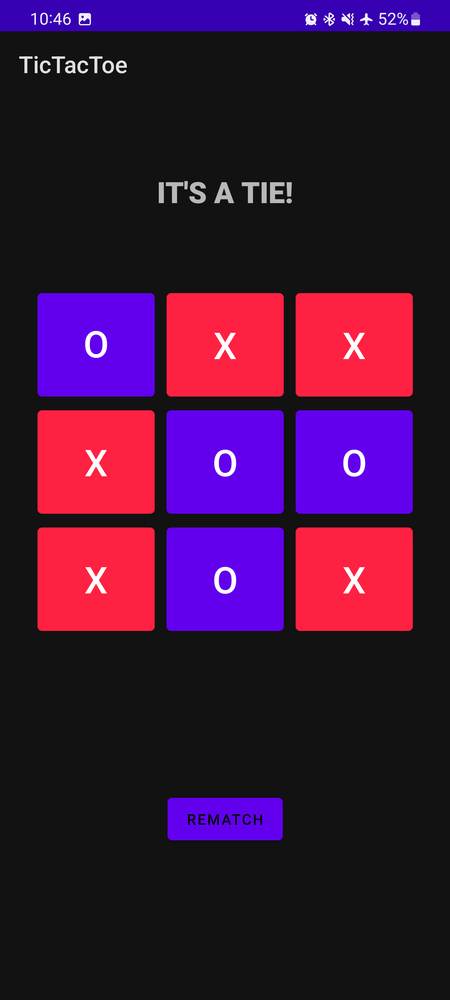
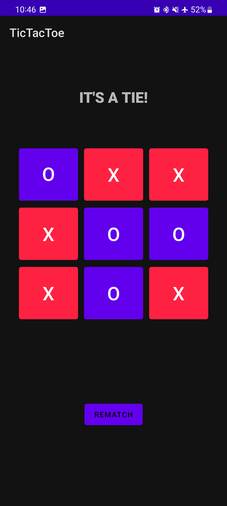

Personal Projects Portfolio
A brief overview of each personal project can be found below along with detailed explanations and screenshots
CloudImage
Soon to be Added
Tarot Card Reader App
Webapp to give daily fortunes and tarot card readings
Click to Learn More
PantryPal
Java desktop app to transcribe spoken food ingredients and generate possible images and recipies using OpenAI APIs
Click to Learn More
Python IDLE Multi-tab modification
Added multi-tab support to Python's open source code for the built in IDE (Python IDLE)
Click to Learn More
OCR Android App
Android app that uses Google's ML kit to take pictures or upload and scans for either any text, QR/barcodes
Custom ASIC encoder & decoder
Design of a custom application specific CPU based on MIPS architecture intended for viterbi encoder/decoder
TicTacToe Android App
Android app of simple TicTacToe game with ability to detect winners/tie.

Facial Recognition
Computer Vision model that can classify faces with 94%
Email Spam Filter
Neural Network model that can classify emails as spam or non-spam with over 96% accuracy.


 
